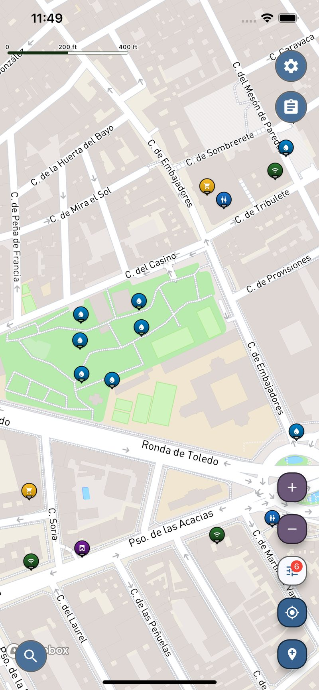

यात्रा उपयोगिता मानचित्र
बैकपैकर्स के लिए व्यावहारिक मानचित्र
नया शहर, भारी बैग, चेक-इन तक छह घंटे बाकी। पैदल दूरी के भीतर कहीं न कहीं एक शॉवर, एक लॉन्ड्रेट, पीने का नल और मुफ्त वाई-फाई है — ये सब आपके हाथ में मौजूद नक्शे पर नहीं हैं।
नि:शुल्क · iOS और Android

Screenshot from the Voyager Maps app showing nearby free shower locations.
चेक-आउट और रात की बस के बीच के घंटे
- गाइड्स में यह बताया जाता है कि क्या देखना है। वे शायद ही कभी यह बताते हैं कि कहाँ नहाएं, कपड़े धोएं, बोतल फिर से भरें या बिस्तर का इंतज़ार करते समय वाई-फाई के साथ कहाँ बैठें।
- अकेले यात्रा करने का मतलब है कि आप अपनी सारी चीज़ें साथ लेकर चलते हैं, इसलिए किसी सुविधा तक जाने के लिए लिया गया अतिरिक्त रास्ता सिर्फ समय ही नहीं बल्कि आपकी सारी चीज़ें साथ लेकर चलने की लागत भी बढ़ा देता है।
- बजट यात्रा मुफ्त पानी, मुफ्त वाई-फाई और सस्ती लॉन्ड्री पर चलती है — ये तीन चीजें मुख्यधारा की मैप ऐप्स सबसे खराब ढंग से दिखाती हैं।
होस्टलों के बीच की खाली जगहों के लिए बनाया गया
एक नक्शा उन चीज़ों का जो वास्तव में आपका दिन तय करती हैं: 36,000 से अधिक शावर, लगभग 20,000 सेल्फ-सर्विस लॉन्ड्री, 450,000 से अधिक पीने के पानी के स्रोत, 490,000 शौचालय और 380,000 वाई-फाई प्रदान करने वाली जगहें — दुनिया भर में 5.5 मिलियन स्थानों पर।
शॉवर्स, सेल्फ-सर्विस लॉन्ड्री और पीने का पानी, ताकि बिस्तरों के बीच लंबी प्रतीक्षा भी संभाल में रहे।
ऐसी जगहों के लिए फ़िल्टर करें जिनकी कोई लागत नहीं है — रिफिल पॉइंट्स, सार्वजनिक नल और ओपन वाई-फाई वाले स्थान।
नक्शा खोलें और इसका उपयोग करें। पंजीकरण की कोई आवश्यकता नहीं है, और यह हर उस देश में एक ही तरह से काम करता है जहाँ आप जाते हैं।
नज़दीक में जो आपको चाहिए, वह पाएं
नज़दीकी शॉवर, लॉन्ड्री और पानी खोजने के लिए ऐप खोलें।
होस्टल, स्टेशनों और शहर में ठहराव के लिए बैकपैकिंग और सोलो यात्रा का नक्शा
बैकपैकिंग ज्यादातर एडवेंचर के भेष में लॉजिस्टिक्स है। रात की बस छह बजे आती है, चेक-इन दो बजे होता है, और इन आठ घंटों में सब कुछ इस बात पर निर्भर करता है कि क्या आप नहाने के लिए जगह, बैग रखने की जगह, बोतल भरने के लिए नल, और वाई-फाई वाली सीट ढूंढ पाते हैं। इनमें से कुछ भी किसी गाइडबुक में नहीं मिलता, और एक अनजान शहर में, एक ऐसी भाषा में जिसकी आप शायद पढ़ते भी नहीं हैं, इनकी तलाश करना, ठीक उसी समय होता है जब फोन सबसे कम काम आता है।
एक बैकपैकर मानचित्र तभी ले जाने लायक होता है जब वह यात्रा की व्यावहारिक परत को कवर करता हो: हर देश में शॉवर, सेल्फ-सर्विस लॉन्ड्री, पीने का पानी, सार्वजनिक शौचालय, वाई-फाई, सुपरमार्केट और फार्मेसी, न कि केवल अच्छी तरह से प्रलेखित स्थानों को। Voyager Maps ओपन मैप डेटा पर बना है और यह बिना अकाउंट के काम करता है, इसलिए चाहे आप लिस्बन में हॉस्टल के बीच हों, बैंकॉक में कनेक्शन का इंतज़ार कर रहे हों, या किसी ऐसे शहर में लंबा सफर तय कर रहे हों जहाँ आप कभी नहीं गए, एक ही नक्शा हर जगह एक जैसा ही काम करता है। खासकर अकेले यात्रा करने वालों के लिए, यह जानना कि व्यावहारिक ठहराव कहाँ हैं, यात्रा से एक छोटे, लगातार रहने वाले झंझट को दूर कर देता है।